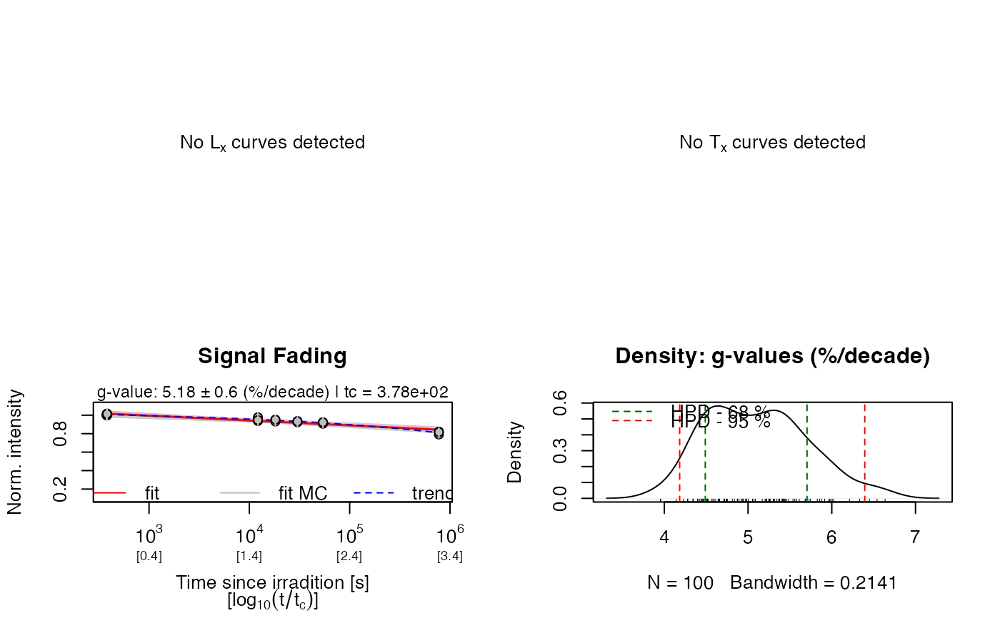
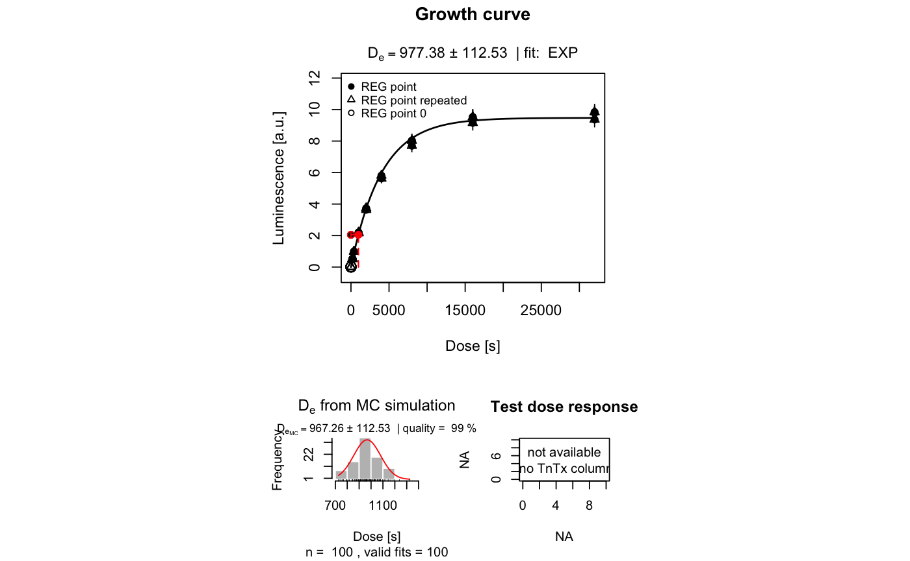

ExampleData.Fading.RdExample data set for fading measurements of the IR50, IR100, IR150 and IR225 feldspar signals of sample UNIL/NB123. It further contains regular equivalent dose measurement data of the same sample, which can be used to apply a fading correction to.
A list with two elements, each containing a further list of data.frames containing the data on the fading and equivalent dose measurements:
These data were kindly provided by Georgina E. King. Detailed information on the sample UNIL/NB123 can be found in the reference given below. The raw data can be found in the accompanying supplementary information.
King, G.E., Herman, F., Lambert, R., Valla, P.G., Guralnik, B., 2016. Multi-OSL-thermochronometry of feldspar. Quaternary Geochronology 33, 76-87. doi:10.1016/j.quageo.2016.01.004
Details
| Lab: | University of Lausanne |
| Lab-Code: | UNIL/NB123 |
| Location: | Namche Barwa (eastern Himalaya) |
| Material: | Coarse grained (180-212 microns) potassium feldspar |
| Units: | Values are given in seconds |
| Lab Dose Rate: | Dose rate of the beta-source at measurement ca. 0.1335 +/- 0.004 Gy/s |
| Environmental Dose Rate: | 7.00 +/- 0.92 Gy/ka (includes internal dose rate) |
## Load example data data("ExampleData.Fading", envir = environment()) ## Get fading measurement data of the IR50 signal IR50_fading <- ExampleData.Fading$fading.data$IR50 head(IR50_fading)#> LxTx LxTx.error timeSinceIrradiation #> 1 0.980 0.0490 381.6 #> 2 0.952 0.0476 12178.8 #> 3 0.924 0.0462 18183.6 #> 4 0.912 0.0456 30178.8 #> 5 0.898 0.0449 54172.8 #> 6 0.974 0.0487 378.0## Determine g-value and rho' for the IR50 signal IR50_fading.res <- analyse_FadingMeasurement(IR50_fading)#> #> [analyse_FadingMeasurement()] #> #> n.MC: 100 #> tc: 3.78e+02 s #> --------------------------------------------------- #> T_0.5 interpolated: NA #> T_0.5 predicted: 4e+11 #> g-value: 5.18 ± 0.84 (%/decade) #> g-value (norm. 2 days): 6.01 ± 0.86 (%/decade) #> --------------------------------------------------- #> rho': 3.92e-06 ± 5.53e-07 #> log10(rho'): -5.41 ± 0.06 #> ---------------------------------------------------## Show g-value and rho' results gval <- get_RLum(IR50_fading.res) rhop <- get_RLum(IR50_fading.res, "rho_prime") gval#> FIT MEAN SD Q_0.025 Q_0.16 Q_0.84 Q_0.975 TC #> x 5.182106 5.233444 0.8372966 3.687753 4.405572 6.094602 6.879693 378 #> G_VALUE_2DAYS G_VALUE_2DAYS.ERROR T_0.5_INTERPOLATED T_0.5_PREDICTED #> x 6.010655 0.8563702 NA 395648134315 #> T_0.5_PREDICTED.LOWER T_0.5_PREDICTED.UPPER #> x 18339400088 18339400088 #> UID #> x 2019-05-03-07:11.0.772521511185914rhop#> MEAN SD Q_0.025 Q_0.16 Q_0.84 Q_0.975 #> 1 3.921821e-06 5.528297e-07 3.031493e-06 3.377133e-06 4.454633e-06 4.952239e-06## Get LxTx values of the IR50 DE measurement IR50_De.LxTx <- ExampleData.Fading$equivalentDose.data$IR50 ## Calculate the De of the IR50 signal IR50_De <- plot_GrowthCurve(IR50_De.LxTx, mode = "interpolation", fit.method = "EXP")#> [plot_GrowthCurve()] Fit: EXP (interpolation) | De = 977.38 | D01 = 4022.47## Extract the calculated De and its error IR50_De.res <- get_RLum(IR50_De) De <- c(IR50_De.res$De, IR50_De.res$De.Error) ## Apply fading correction (age conversion greatly simplified) IR50_Age <- De / 7.00 IR50_Age.corr <- calc_FadingCorr(IR50_Age, g_value = IR50_fading.res)#> #> #> [calc_FadingCorr()] #> #> >> Fading correction according to Huntley & Lamothe (2001) #> #> .. used g-value: 5.182 ± 0.837 %/decade #> .. used tc: 1.198e-08 ka #> .. used kappa: 0.0225 ± 0.0036 #> ---------------------------------------------- #> seed: NA #> n.MC: 10000 #> observations: 10000 #> ---------------------------------------------- #> Age (faded): 139.6257 ka ± 14.8129 ka #> Age (corr.): 288.1621 ka ± 72.5728 ka #> ----------------------------------------------